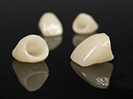
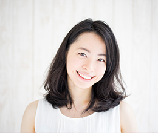

- トップ
- 審美・ホワイトニング
高田歯科クリニックの審美・ホワイトニング
横浜市港北区網島の歯医者「高田歯科クリニック」では、銀歯を美しいセラミック製の人工歯にする審美治療や、天然歯の黄ばみを白くするホワイトニングに対応しています。全身の美と健康への意識の高まりからか、近年、ご希望される方の多い診療メニューです。歯の美しさについては、ご自分でどうにかすることが難しい部分です。どうぞお気軽に当院へご相談ください。
高田歯科クリニックの精密な審美治療
審美歯科治療というと、美しさのみを基準にしているように思われがちですが、実際は、機能性と美しさを両立させる診療メニューです。噛み合わせなどの歯の機能性が悪ければ、お口の健康が損なわれ、ひいては美しさも損なわれてしまいます。当院では、精密治療の確かな技術で長持ちする審美治療をご提供しています。
銀歯と金属アレルギー
保険適用の虫歯治療で使用される銀歯は７０年も前に指定された安価な金属です。保険の治療で使用される金属の一部の素材が、金属製品（アクセサリー等）を身に着けているときに起こる金属アレルギーの原因となっていることがあります。審美治療で使用される歯科材料のセラミック（陶材）は金属アレルギーの心配はありません。また細菌の塊であるバイオフィルムがつきにくいので衛生的です。このように審美治療は、見た目以外の理由でも、選択肢になりえるのです。気になるかゆみやかぶれなどの症状がある方は、ぜひ一度当院へご相談ください。
当院の審美歯科メニュー
詰め物（インレー）
※表は左右にスクロールして確認することができます。
| 保険適用 | ゴールドインレー | セラミックインレー | |
|---|---|---|---|
 |
|||
| 材料 | 金銀パラジウム合金 | 金合金 | セラミック |
| 説明 | 保険適用で使用される詰め物はこちらに限定されます。変形による経年劣化のため、時間が経つと歯に合わなくなり２次う蝕の原因になります。見た目もよくありません。 | 歯質との適合がよく、長持ちしやすい素材です。強い力がかかる部位にも使用できます。金属アレルギーの心配もあまりありません。審美性の面ではセラミックに劣ります。 | 素材のすべてにセラミックを使用した詰め物です。天然歯の硬さに近く、透明感のある白さを実現します。強度・耐久性がありますが、部分的に力が加わると、割れてしまう可能性もあります。 |
被せ物（クラウン）
※表は左右にスクロールして確認することができます。
| 保険適用 | ゴールドクラウン | MB（メタルボンド） （陶材焼き付け鋳造冠） |
セラミッククラウン | |
|---|---|---|---|---|
|  | ||||
| 材料 | 金銀パラジウム合金 | 金合金 | 内側：金属 外側：セラミック |
セラミック |
| 説明 | 保険適用の詰め物と同様に、保険適用の場合は、こちらの素材しか選択肢はありません。金属アレルギーの心配があります。 | 歯に適合しやすく、虫歯にもなりにくい素材です。強い力がかかる部位にも使用できます。 | 強度と美しさを合わせ持つ素材です。表面のセラミックが美しく、変色もありません。経年的に内側の金属が溶け出し、歯ぐきに変色を起こすことがあります。 | 金属を一切使用しない被せ物です。見た目も美しく、強度・耐久性ともに申し分ありません。天然歯と見分けがつかないほどの仕上がりになります。 |
土台
※表は左右にスクロールして確認することができます。
| 保険適用 | 金合金 | ファイバーコア | |
|---|---|---|---|
| 材料 | 銀合金 | 金合金 | グラスファイバー |
| 説明 | 被せ物の土台となる芯（コア）です。硬すぎるため、歯質の薄い歯に使用し力が加わりすぎると、歯が割れてしまう可能性が高くなります。 | ほとんどの症例に使用できます。硬さはありますが、硬すぎないため、歯質が割れる恐れが保険の材料と比較すると軽減されます。 | 歯の象牙質の硬さと同等で、しなる性質を持つグラスファイバーを使用したコアです。歯の破折の可能性が低くなります。白い素材なので、透明感のあるセラミックを被せても目立ちません。 |
当院の症例紹介
セラミック治療
主訴：歯の隙間が空いてきた。歯の大きさが気になる。
性別：女性
治療：セラミック修復
治療回数：4〜5回（コンサルテーション含む）
費用：料金表をご覧ください
リスク等：過度なブラッシングや歯間ブラシ使用により再度隙間が空く可能性がある
接着性Br
主訴：歯の隙間を補綴で埋めたい。
性別：女性
治療：セラミック修復
治療回数：4〜5回（コンサルテーション含む）
費用：料金表をご覧ください
リスク等：欠損部の隣接した歯を少し削らなければならない。
矯正＋セラミック修復
主訴：歯並びを改善したい
性別：女性
治療：矯正治療＋セラミック修復
治療回期間：約2年
費用：料金表をご覧ください
リスク等：リテーナーを使用しないと矯正後後戻りの可能性がある。
セラミック治療

主訴：虫歯の治療と銀歯を白くした
性別：女性
治療：セラミック修復
治療回数：2〜3回（1部位について）
費用：料金表をご覧ください
リスク等：金属より形成量は多くなるが、セラミックの特性であるバイオフィルムがつきづらくなる事、金属アレルギーなどの問題がない事など考えるとメリットの方が多いと考えられます。
高田歯科クリニックのホワイトニング

ホワイトニングとは、薬剤を使って歯の黄ばみを白くしていく方法です。もともと日本人の歯の色はやや黄色みを帯びていますが、年齢とともに歯の黄ばみが起こるため、気にされている方も少なくありません。薬剤を浸透させて歯を白くするホワイトニングなら、健康な歯を削ることなく希望通りの白い歯が手に入ります。
ホワイトニングには、オフィスホワイトニングとホームホワイトニングの2種類があり、当院では、いずれにも対応しています。患者様のライフスタイルやご希望に合わせて、最適なものをご提案させていただきます。
オフィスホワイトニング
オフィスホワイトニングでは、歯科医院で専門家の手によって歯を白くしていきます。歯の表面に薬剤を塗り、特殊な光を照射することで歯を白くさせます。歯のクリーニングから施術まで、すべてプロに任せられ、その日のうちに希望の白さが手に入ります。即効性がある反面、後戻り（再着色）が起こりやすいので、施術後の食生活などに注意が必要です。
オフィスホワイトニングの流れ
- STEP1.診査・カウンセリング
- お口の中の状態を確認し、ホワイトニングについてのご希望や、施術のご説明をします
- STEP2.写真撮影
- ホワイトニング前の歯の色を確認できるよう、口腔内写真を撮影します
- STEP3.クリーニング
- 歯の汚れや着色を取り除くために、歯のクリーニングをします
- STEP4.保護
- 歯肉に薬剤がしみないよう、歯肉保護材を塗布します
- STEP5.ホワイトニング
- 歯の表面に、比較的高濃度のホワイトニング剤を塗布し、特殊な光を当てます
- STEP6.写真撮影・トリートメント
- 施術効果を確認できるよう写真撮影します。歯に加わったダメージをトリートメントでカバーします
ホームホワイトニング
ホームホワイトニングは、ご自宅で好きなときに取り組んでいただくホワイトニングです。歯科医院で作成したマウストレーに比較的低濃度の薬剤を注入し、歯に装着して浸透させます。毎日根気よく取り組むことで、2週間ほどで白さが実感できます。ホワイトニング前の歯の清掃や仕上がりをご自身で意識することから、白さの維持が上手にできる方が多くいらっしゃいます。
オフィスホワイトニングの流れ
- STEP1.診査・カウンセリング
- お口の中の状態を確認し、ホワイトニングについてのご希望や、施術のご説明をします
- STEP2.検査
- 虫歯や歯周病などのお口のトラブルがないか検査します。トラブルがある場合は、治療を優先します
- STEP3.クリーニング
- 歯の汚れや着色を取り除くために、歯のクリーニングをします。薬剤が浸透しやすくなります
- STEP4.歯型の採取
- マウストレーを作成するための歯型を採ります。また、ホワイトニングやメインテナンスの方法をレクチャーいたします
- STEP5.ホワイトニング
- ご自宅で毎日、マウストレーに薬剤を注入し、歯に装着して浸透させます。事前に入念なブラッシングが必要です